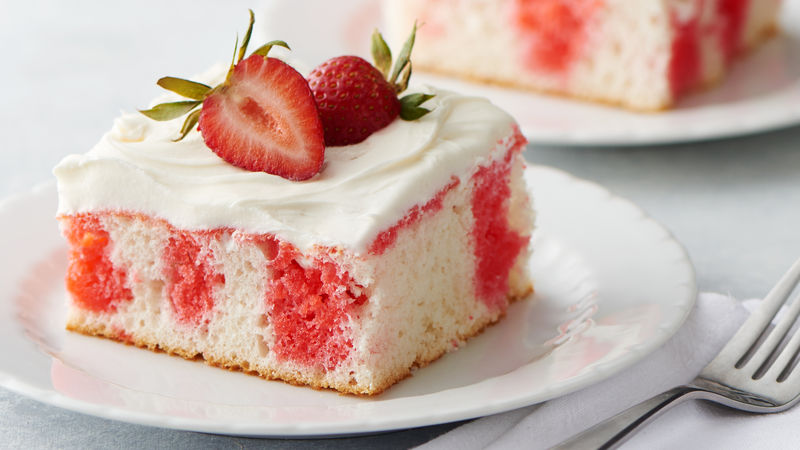

Poke Cake

Description
Poke Cake is one of my favorites. My Grandmother would make it after almost every meal my family and I ate at her house.
It's a "hidden-gem" in the world of cooking and I'm happy to be sharing this recipe with you.
Ingredients you will need:
- 1 pkg White Cake Mix
- 1 Cup Boiling Water
- 16 oz Container of Cool Whip
- 1 Small Pkg Jello
- 1/2 Cup Cold Water
Step-By-Step
- Prepare the cake as directed by the box.
- Let cake cool for 15 minutes once complete.
- Preparer the Jello, again following the directions found on the box.
- Poke the cooled cake with a for at 1/2" intervals.
- Sppon or gently pour the Jello mixture evenly over the top of the cake.
- Chill for 3-4 hours and top with Cool Whip to serve
Congrats! You have made Poke Cake! Enjoy!